On Morality and Secularism
Secularism demands a moral standard for everyone while eschewing any authority beyond the self.
Read moreA Place for Prayer, Community & Learning
“The believer is to another believer like a building, each part strengthening the other.” Ṣaḥīḥ Muslim
الْمُؤْمِنُ لِلْمُؤْمِنِ كَالْبُنْيَانِ يَشُدُّ بَعْضُهُ بَعْضًا صحيح مسلم
Middle Ground is not open for all daily prayers.
We have a WhatsApp group dedicated to announcing the times in which Middle Ground is open for specific prayers (updated daily).
If you wish to be included in the group, please email us at contact@muslim.center and provide your name and number, and in shā Allāh we’ll add you to the WhatsApp group — or click this link to request to be added.
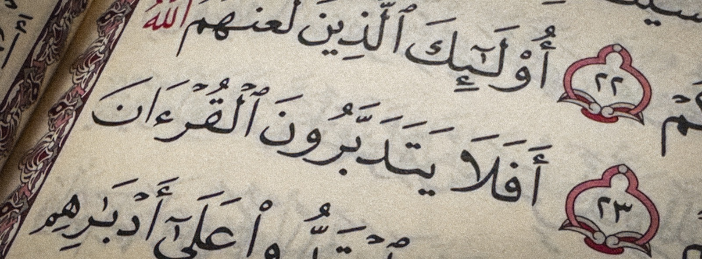
Jumu’ah · Every Friday
The khuṭah begins at 1:00 PM · year-round, regardless of daylight saving time
1:00 PM
This Week’s khaṭīb:
Imam Marc Manley
Watch Live on YouTube
Gathered In Worship
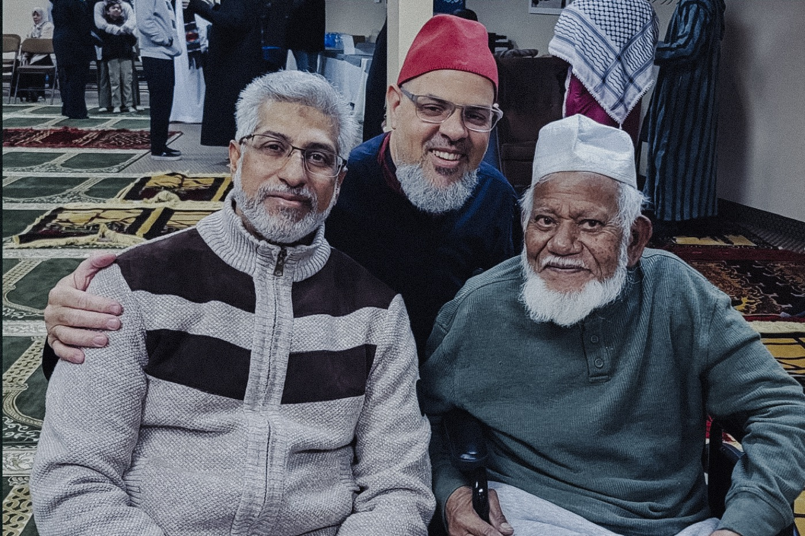
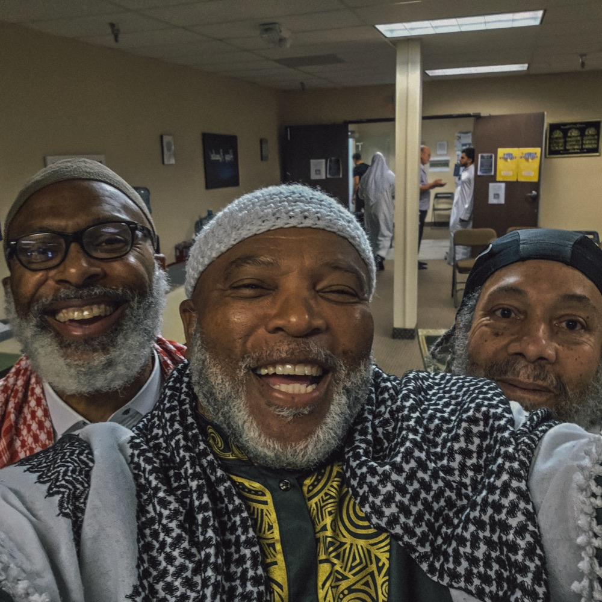
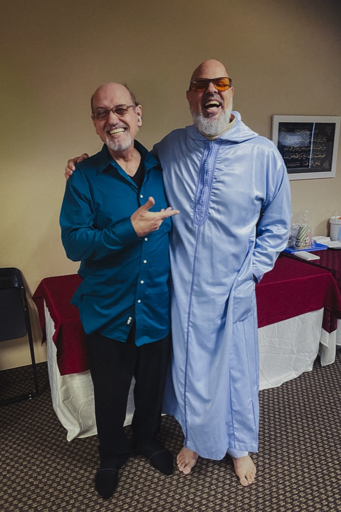
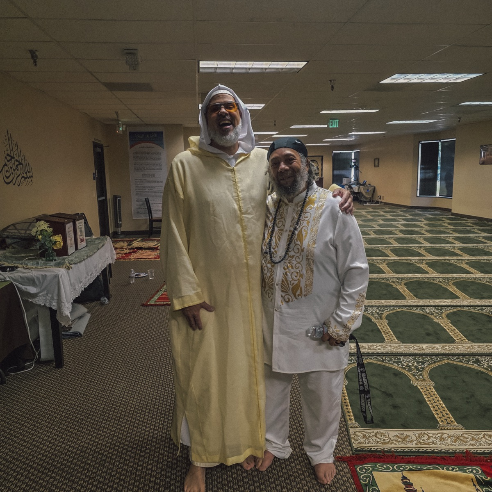
Rooted In Community
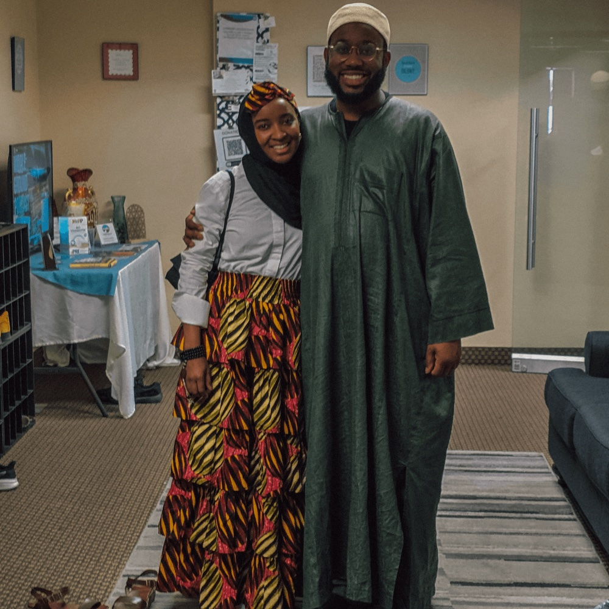
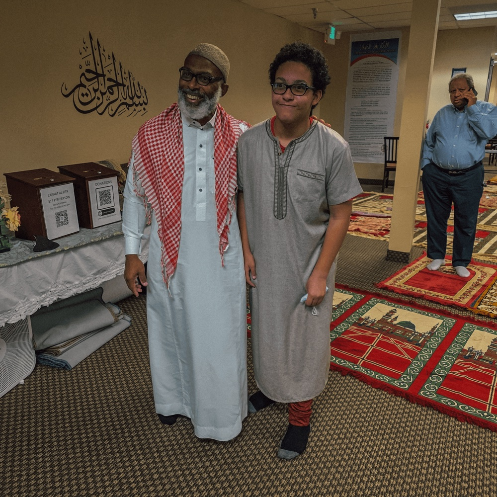
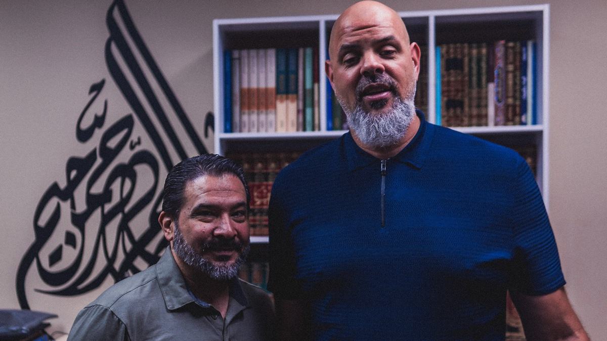
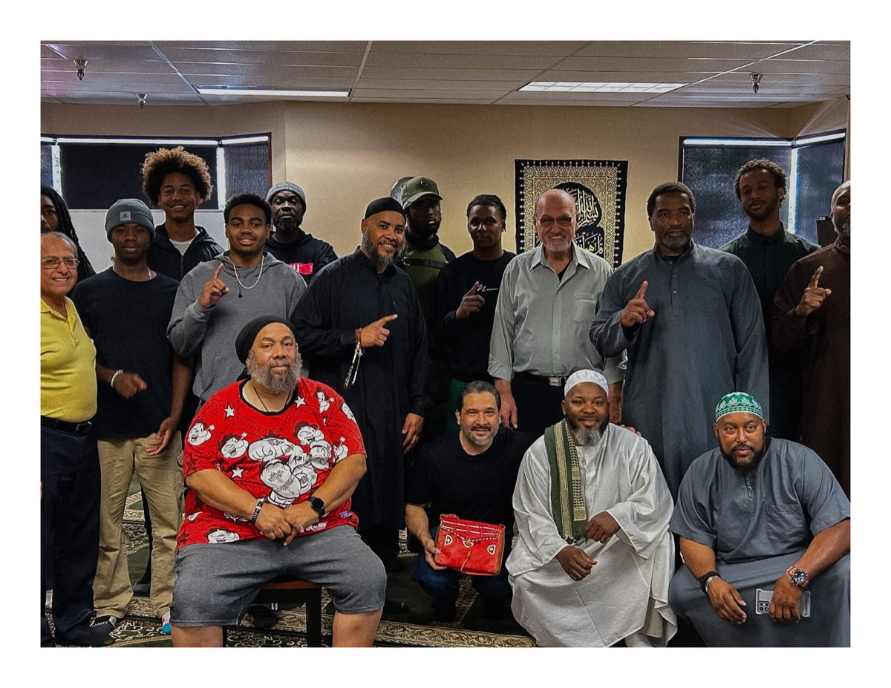
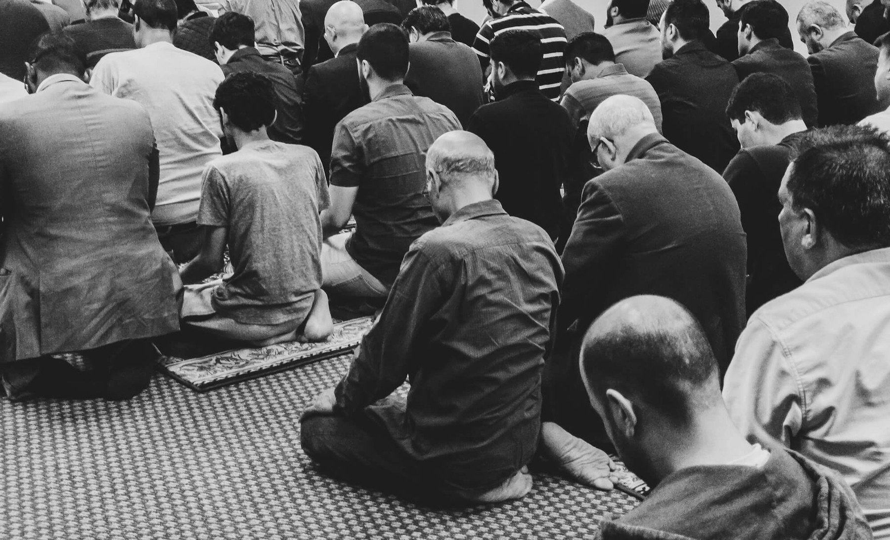
Middle Ground runs on the generosity of this community. Your support keeps our doors open for prayer, learning, and gathering.
Donate Now
Meet Imam Marc
Imam Marc Manley has been with Middle Ground since its inception. He teaches classes and leads prayer. But there’s so much more than that. Get to know Imam Marc! →
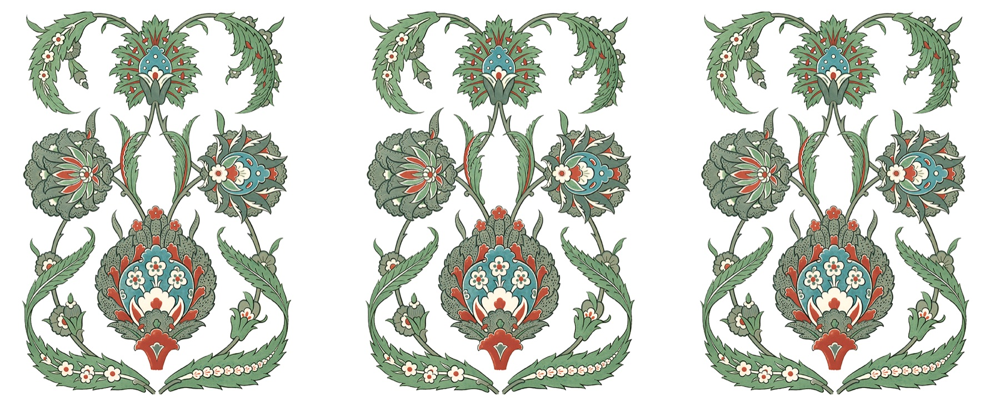
Imām Marc teaches classes on Fridays, Saturdays, and Sundays.
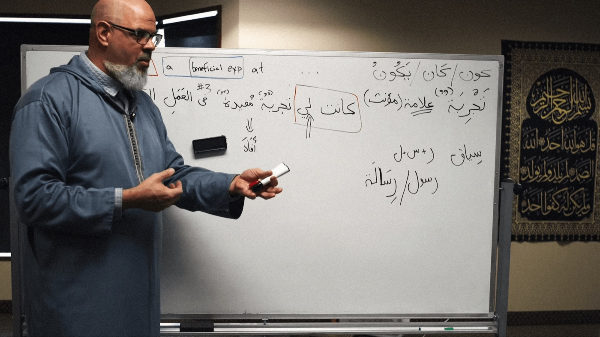
Imām Marc teaches a variety of classes of which they change periodically throughout the year. Here’s what he is currently teaching.
This Ḥalaqah discusses a variety of important topics related to faith and everyday life. New Muslims, the youth and the family will feel right at home. It’s also an opportunity to ask questions.
Day
Friday
Time
After Maghrib (8:15PM)
FC has gained a well-earned reputation as being an opportunity to really connect with others in the community by bonding over Imām Marc’s famous coffee! Breakfast is served and its all hands on deck!
Day
Sunday
Time
5:15AM
This is Imām Marc’s tafsīr class, a class which explains the Qur’ān and dives deeper into its meaning.
Day
Sunday
Time
7AM
Secularism demands a moral standard for everyone while eschewing any authority beyond the self.
Read moreEpisode 50 of the Middle Ground Podcast with Imam Marc Manley and brother Dawud Aleman.
Read moreSūrah Munafiqun, the vindication of Zayd ibn Arqam, and telling the truth in difficult times.
Read moreA reflection on fitrah, homesteading, and the quiet pull toward a simpler, more prophetic way of living.
Read more
Imam Marc Manley
Middle Ground Podcast

Now Streaming
Imam Marc Manley in conversation — faith, community, and the questions in between. New episodes every other week.
Listen to the Latest Episode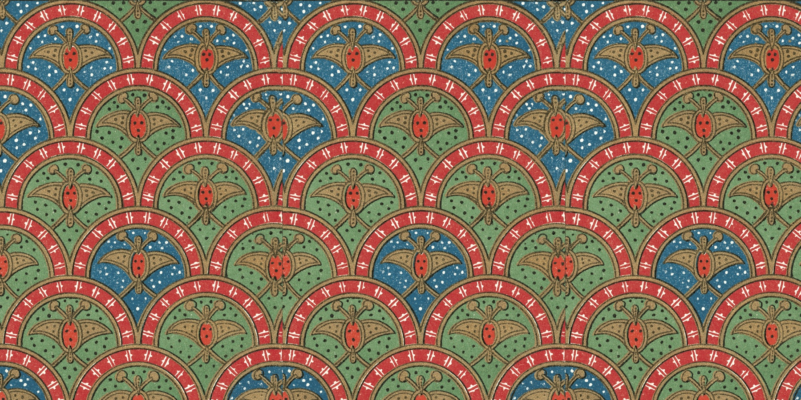
Questions about a class, Jumu’ah, or how to get involved? Reach out and we’ll be in touch soon.
Prefer email or a phone call? Write to contact@muslim.center or call 909-451-9770